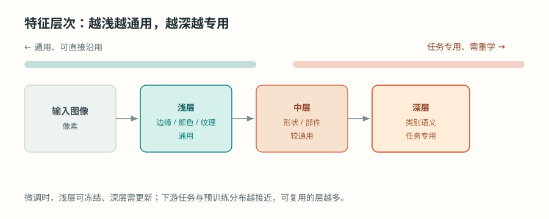
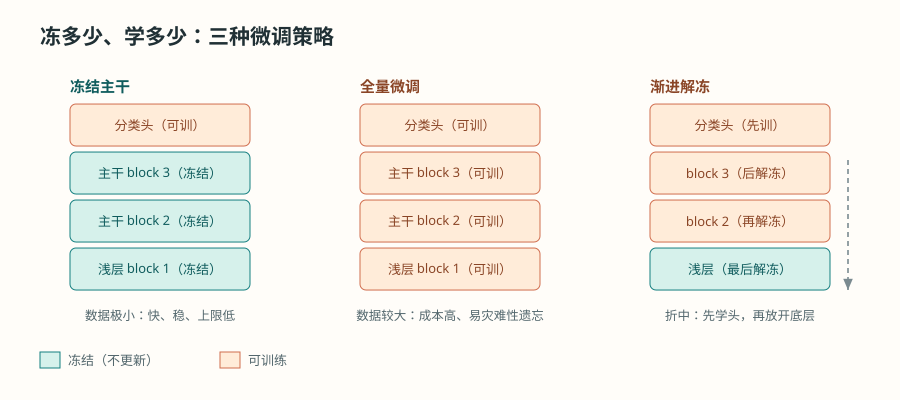

CHAPTER 24 · TRANSFER LEARNING
迁移学习与模型微调：把预训练知识接到新任务
小数据集上从零训练一个 CNN 几乎无法收敛，但加载 ImageNet 预训练权重、只微调少量参数就能工作。这背后是特征层次性：浅层是通用的边缘/纹理，深层才是任务相关的语义。本章把“冻多少、学多少、用多大学习率”讲成可决策的规则，并解释 LoRA 为什么能用极少的参数逼近全量微调。
为什么浅层特征可以迁移
深度网络学到的特征是分层的：靠近输入的浅层学到类似 Gabor 滤波器的边缘、颜色与纹理基元，中层组合成部件与形状，靠后的深层才形成“猫的脸”“车轮”这类任务相关的语义。浅层的那部分不关心具体类别，这正是它可迁移的原因。AlexNet（2012）之后，把在 ImageNet 上预训练得到的“网络特征”迁移到其他视觉任务成为标准做法。

这个机制也解释了为什么 ImageNet 预训练这么有效：模型先在一个类别丰富的大数据集上学会“如何看图像”，再把通用部分搬到新任务。下游任务与 ImageNet 越接近，可复用的层就越多。
预训练权重：一个更好的初始点
预训练权重的本质是在大规模数据上充分优化过的参数初始值。相对随机初始化（Xavier/Kaiming），它给了优化一个“已经会看图像”的起点。ImageNet 系列是最经典的预训练语料：通常说的 ImageNet-1K 约 128 万张图像、1000 个类别；更大规模的 ImageNet-21K 约 1400 万张图像、2 万余个类别（准确数字以官方说明为准）。规模更大的语料通常带来更好的下游泛化。
| 预训练来源 | 数据规模 | 典型用途 | 说明 |
|---|---|---|---|
| 随机初始化 | 仅目标数据 | 数据极大且与自然图像差异极大时 | 收敛慢、易过拟合 |
| ImageNet-1K | ≈128 万 / 1000 类 | 通用视觉任务的默认选择 | 最快、最普遍 |
| ImageNet-21K | ≈1400 万 / 2 万余类 | 追求更强表征时 | 预训练成本更高 |
| 自监督（DINO / MAE） | 常为 1K 规模 | 无需标注的预训练 | 表征质量接近监督预训练 |
本页不给出具体下游精度数字：迁移收益强烈依赖预训练语料、目标数据规模与任务相似度，跨论文比较前必须对齐协议。可操作的结论是：除非目标数据达到百万级且分布与自然图像差异极大，否则从预训练权重开始通常比从零训练更快、更好。
微调策略：冻多少、学多少
加载预训练权重只是第一步，冻多少层、解冻多少层决定最终效果与成本。三种常见策略：
- 冻结主干（feature extractor）：固定预训练主干，只训练新加的分类/检测头。适合目标数据很小（每类几十张）的场景，训练快、不易过拟合。
- 全量微调：所有层一起更新。适合目标数据较大（每类上千张）的场景，能完全适应新任务，但成本高、小数据上易过拟合。
- 渐进解冻：先只训头部，收敛后逐层解冻靠后的层。先在冻结特征上学好决策边界，再适度调整特征。

一个常见的决策表（数值为起始建议，需在验证集上调，并非通用常数）：
| 目标数据量 | 推荐策略 | 学习率起点 | 典型 epoch |
|---|---|---|---|
| 很小（每类数十张） | 冻结主干 + 只训头部 | 头部 1e-3 ~ 1e-4 | 20–50 |
| 中等（每类数百张） | 渐进解冻 / 差分学习率 | 主干 1e-5 + 头部 1e-4 | 20–40 |
| 较大（每类上千张） | 全量微调 | ~1e-4（含 weight decay） | 30–100 |
# 需安装 torch / torchvision；本页不执行，仅展示参数分组
from torchvision.models import resnet50
import torch.nn as nn, torch.optim as optim
model = resnet50(weights="IMAGENET1K_V2")
model.fc = nn.Linear(model.fc.in_features, 2) # 替换为二分类头
# 差分学习率：主干小、头部大（必须分参数组，不可再传全局 lr）
param_groups = [
{"params": [p for n, p in model.named_parameters() if not n.startswith("fc.")], "lr": 1e-5},
{"params": model.fc.parameters(), "lr": 1e-3},
]
optimizer = optim.AdamW(param_groups, weight_decay=1e-4)
scheduler = optim.lr_scheduler.CosineAnnealingLR(optimizer, T_max=50)差分学习率与灾难性遗忘
差分学习率（discriminative learning rates）：靠输入的层用较小的学习率（保留通用特征），靠输出的层用较大的学习率（快速适应新任务）。这与“冻结 / 解冻”是同一思路的连续版本：不再二选一，而是给不同深度不同的更新速度。
最典型的坑是把微调学习率设得与从头训练一样大（如 1e-3）。预训练权重已接近一个不错的局部解，过大的更新会把它整体推出去，即灾难性遗忘（catastrophic forgetting）：预训练知识被新数据冲掉，而新数据又不够重建。表现常是验证损失先降后急升。
一个实用的稳定技巧：训练初期只让 BatchNorm 层的 running mean / variance 用目标数据更新，先“校正”统计量，再开始更新卷积核。因为 BN 统计量直接反映数据分布，这一步能减少主干与新分布的不匹配。
参数高效微调与 LoRA
模型变大后（ViT-Large 约 3 亿参数），全量微调要为每个下游任务保存一份完整副本。参数高效微调（PEFT）的思路是：冻结预训练权重，只训练或插入少量新参数。常见三类：
- Linear Probing：主干完全冻结，只训一个线性分类头。表征足够强时（如 CLIP、DINOv2）效果很好，成本极低。
- Adapter：在每层插入一个“降维→非线性→升维”的瓶颈模块，只训这些模块。
- LoRA：不改变网络结构，而是把权重增量写成两个低秩矩阵的乘积。
LoRA（Low-Rank Adaptation）对权重矩阵 W ∈ R^{d×k} 不强训 W 本身，而是学习一个低秩增量 ΔW = B A，其中 B ∈ R^{d×r}、A ∈ R^{r×k}，秩 r ≪ min(d,k)。前向变为：
W 冻结；只更新 B 与 A。每层可训练参数从 d×k 降到 r×(d+k)；推理时可以把 BA 合并回 W，因此不增加推理延迟。α 是缩放超参。

def lora_params(d, k, r):
"""全量微调需 d*k 参数; LoRA 只需 r*(d+k)."""
return r * (d + k)
assert lora_params(768, 768, 8) == 8 * (768 + 768) # 12288
assert lora_params(768, 768, 8) < 768 * 768 # 远小于全量
ratio = lora_params(768, 768, 8) / (768 * 768)
assert abs(ratio - 0.0208333) < 1e-5
print(f"LoRA(r=8) 参数 {lora_params(768, 768, 8)}, 约为全量的 {ratio:.2%}")
def matvec(M, x):
return [sum(M[i][j] * x[j] for j in range(len(x))) for i in range(len(M))]
def matmul(P, Q):
return [[sum(P[i][t] * Q[t][j] for t in range(len(Q))) for j in range(len(Q[0]))]
for i in range(len(P))]
W = [[1.0, 0.0], [0.0, 1.0]] # d x k = 2x2, 冻结
A = [[1.0, 2.0]] # r x k = 1x2
B = [[2.0], [3.0]] # d x r = 2x1
alpha, r, x = 2.0, 1, [1.0, 1.0]
base = matvec(W, x) # W x = [1, 1]
delta = matvec(matmul(B, A), x) # B A x = [6, 9]
out = [base[i] + delta[i] * (alpha / r) for i in range(2)]
assert out == [13.0, 19.0] # (alpha/r)=2 -> [1+12, 1+18]
print("LoRA 前向输出:", out)域偏移与领域适配
迁移的难度取决于域偏移（domain shift）：源域（预训练数据分布）与目标域差异越大，可复用的层越少。粗略分三层：
- 低层次偏移：光照、颜色、分辨率等底层差异。通常靠数据增强（第 23 章）与归一化就能缓解。
- 中层次偏移：纹理、形状、空间布局差异。如自然图像中物体多居中，航拍图像中则分布全图。
- 高层次偏移：类别体系不同。ImageNet 有“猫/狗”，医学任务只有“肿瘤/正常组织”，顶层语义完全不同。
针对不同领域的常用适配：
- 医学影像：常只加载预训练网络的卷积层、丢弃原分类头，再在领域数据上继续预训练。单通道输入可把 RGB 预训练权重按通道平均或重复取得。
- 遥感图像：多为正射俯视，建议在遥感专用数据上继续预训练，并使用全角度旋转增强。
- 工业检测：背景单一，跨产线/相机的色彩与分辨率差异是主要偏移，颜色增强与风格迁移常能弥合。
常见误区与边界
- 预训练分布与目标差异过大：直接搬 ImageNet 权重到医学/多光谱输入往往不佳，需要领域适配或领域预训练。
- 学习率设得和从头训练一样大：会把预训练解整体推出去（灾难性遗忘），微调学习率通常比从头训练小一个数量级。
- 过早停训：预训练模型在新分布上需要几个 epoch 的“适应期”，第一个 epoch 不降不代表失败。
- PEFT 不是无限缩水：LoRA 的秩 r、Adapter 的瓶颈宽度都是容量超参；r 太小会限制可表达的任务增量，需在验证集上调。
- 推理收益要分清：LoRA 可在推理前合并回 W，所以不增加延迟；但 Adapter 会插入额外层，推理时仍有开销。
检查理解：目标数据每类只有几十张时，为什么优先“冻结主干”而不是全量微调？
全量微调需要足够的梯度信号去更新大量参数，数据太小时容易过拟合，且过大的更新会覆盖预训练知识（灾难性遗忘）。而浅层特征本就通用、无需重学，冻结主干能让优化只集中在任务相关的头部，参数少、收敛快、不易过拟合。待数据或效果需要时，再改用渐进解冻逐层放开。
原始资料与口径
本页的 ImageNet 预训练、差分学习率、Adapter 与 LoRA 依据对应原论文与官方文档；具体迁移收益与学习率区间依赖数据、语料与任务相似度，本页仅给“起始建议”而不固化下游精度。
- ImageNet Classification with Deep Convolutional Neural Networks (AlexNet, arXiv:1207.0580)
- ImageNet Large Scale Visual Recognition Challenge (ILSVRC, arXiv:1409.0575)
- Parameter-Efficient Transfer Learning for NLP (Adapter, arXiv:1902.00751)
- LoRA: Low-Rank Adaptation of Large Language Models (Hu 等, arXiv:2106.09685)
- Emerging Properties in Self-Supervised Vision Transformers (DINO, arXiv:2104.14294) · Masked Autoencoders Are Scalable Vision Learners (MAE, arXiv:2111.06377)
- torchvision.models 预训练权重说明